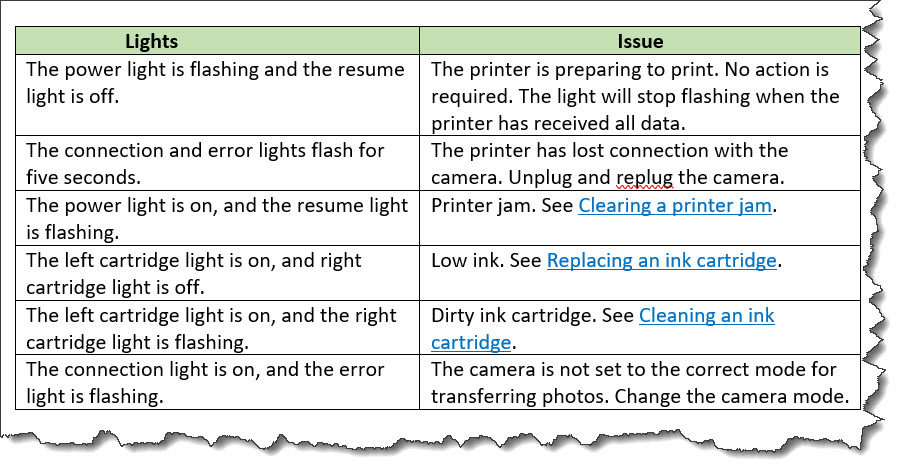

Troubleshooting
Troubleshooting topics are designed to document problems that people might encounter. They provide a topic structure that enables content authors to describe a condition, provide diagnostic information, discuss causes, and outline possible solutions.
Purpose
Troubleshooting topics serve the following purposes:
- Describe the problem condition, which usually is a state in a system, product, or service that a reader wants to correct
- Provide information that helps the reader diagnose the cause of the problem, if it is known
- Explain the cause of the problem and how to fix it
Content model
The troubleshooting topic is structured in three parts:
- Condition
- This section of the topic provides
information about the problem condition, and it is specified
by the
<condition>element. This element is optional, as often the problematic condition can be adequately described in the title and short description. - Diagnostics
- This optional section of the topic provides
information about how to determine possible causes of the
problem. It is specified by the
<diagnostics>element, which must contain one or both of the following structural elements:- General diagnostic information (
<diagnostics-general>) - Procedural diagnostic information (
<diagnostics-steps>)
- General diagnostic information (
- Trouble solution
- This optional section of the topic provides
information about possible causes and remedies for the problem.
It is specified by
<troubleSolution>elements.
Examples
This section of the topics contains examples of troubleshooting topics.
The following code sample shows a simple troubleshooting topic.
The title and short description describe the problem, and the
single <troubleSolution> element explains the cause of the problem and how
to remedy it.
<troubleshooting id="oasis-spec-not-rendered-correctly">
<title>Specification PDF is not rendered correctly</title>
<shortdesc>The specification URIs and notices appear in the TOC; they also appear
twice in the body of the document.</shortdesc>
<troublebody>
<troubleSolution>
<cause>
<p>This problem occurs when the <xmlelement>notices</xmlelement> element
for external publishing is not excluded.</p>
</cause>
<remedy>
<steps>
<step>
<cmd>Use a DITAVAL file that excludes the <xmlelement>notices
platform="external-publishing-engine"</xmlelement> element
when you generate the PDF.</cmd>
</step>
</steps>
</remedy>
</troubleSolution>
</troublebody>
</troubleshooting>The following code sample shows a complex troubleshooting topic
about "Blinking printer lights." It contains a <diagnostics-general> element
that contains a table that outlines printer light conditions and
possible remedies. It also includes
several <troubleSolution> elements that
reuse steps from other DITA topics.
troubleshooting id="blinking-lights">
<title>Blinking printer lights</title>
<troublebody>
<condition><p>The indicator lights are blinking and you are unable to print.</p></condition>
<diagnostics>
<diagnostics-general><p>Use the following table to diagnose the problem.</p>
<simpletable frame="all" id="light-diagnostics" relcolwidth="1* 2*">
<sthead>
<stentry>Lights</stentry>
<stentry>Issue</stentry>
</sthead>
<strow>
<stentry>The power light is flashing and the resume light is off./stentry>
<stentry>The printer is preparing to print. No action is required. The light
will stop flashing when the printer has received all data.</stentry>
</strow>
<strow>
<stentry>The connection and error lights flash for five seconds.</stentry>
<stentry>The printer has lost connection with the camera. Unplug and replug the
camera.</stentry>
</strow>
<strow>
<stentry>The power light is on, and the resume light is flashing.</stentry>
<stentry>Printer jam. See <xref href="#./jam"/>.</stentry>
</strow>
<strow>
<stentry>The left cartridge light is on, and right cartridge light is off.</stentry>
<stentry>Low ink. See <xref href="#./ink"/>.</stentry>
</strow>
<strow>
<stentry>The left cartridge light is on, and the right cartridge light is flashing.
</stentry>
<stentry>Dirty ink cartridge. See <xref href="#./clean"/>.</stentry>
</strow>
<strow>
<stentry>The connection light is on, and the error light is flashing.</stentry>
<stentry>The camera is not set to the correct mode for transferring photos. Change
the camera mode.</stentry>
</strow>
</simpletable>
</diagnostics-general>
</diagnostics>
<troubleSolution>
<remedy id="jam">
<title>Clearing a paper jam </title>
<steps conkeyref="clear-jam/steps">
<step><cmd/></step>
</steps>
</remedy>
</troubleSolution>
<troubleSolution>
<remedy id="clean">
<title>Cleaning ink cartridges</title>
<steps conkeyref="clean-cartridge/steps">
<step><cmd/></step>
</steps>
</remedy>
</troubleSolution>
<troubleSolution>
<remedy id="ink">
<title>Replacing ink cartridges</title>
<steps conkeyref="replace-ink/steps">
<step><cmd/></step>
</steps>
</remedy>
</troubleSolution>
</troublebody>
</troubleshooting>
The table in the
<diagnostics-general> element might be
rendered in the following way. The hyperlinks in the "Issue" column
resolve to the <remedy> elements in the
topic.
